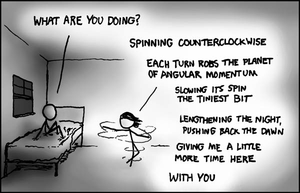
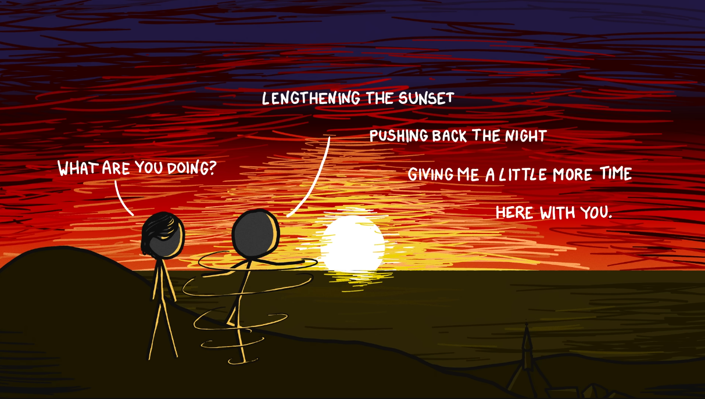

A rigorous derivation of xkcd #162: Angular Momentum

A person stands on Earth's surface at geodetic latitude $\lambda$ and spins counterclockwise (viewed from above) at angular frequency $f$ turns per second about their local vertical axis. By conservation of angular momentum in the Earth–person system, this must alter Earth's spin rate. We want to derive, as a function of $\lambda$, $f$, and spinning duration $\tau$, how much later dawn arrives.
Let $\hat{z}$ be the unit vector along Earth's rotation axis (pointing toward the north celestial pole). A person at latitude $\lambda$ has a local vertical $\hat{n}$ that makes an angle $\theta = 90° - \lambda$ (the colatitude) with $\hat{z}$. Therefore:
This projection factor $\sin\lambda$ is the heart of the latitude dependence. At the equator ($\lambda = 0°$), spinning about your vertical axis produces angular momentum entirely perpendicular to Earth's axis—zero effect on Earth's spin rate. At the pole ($\lambda = 90°$), your spin axis is perfectly aligned with Earth's—maximum effect.
Treat the Earth + person as an isolated system (neglecting lunar and solar tidal torques, which act on much longer timescales). The $z$-component of total angular momentum $L_z^{\text{tot}}$ is conserved.
Initial state (person stationary, co-rotating with Earth):
where $I_E \approx 8.04 \times 10^{37}\;\text{kg·m}^2$ is Earth's axial moment of inertia, $\Omega_0$ is Earth's angular velocity, and $I_{p \to E} = m R_E^2 \cos^2\!\lambda$ is the person's moment of inertia about Earth's axis. Since $I_{p \to E} / I_E \sim 10^{-23}$, we drop this term.
Which $\Omega_0$? The rate that carries Earth's rotational angular momentum is the sidereal rate, $\Omega_0 = 2\pi / (86{,}164\;\text{s}) \approx 7.292 \times 10^{-5}\;\text{rad/s}$ (one rotation relative to the fixed stars). The familiar 86,400 s "day" is the solar day, which is $\approx 0.27\%$ longer because Earth also advances along its orbit. The distinction is genuinely negligible at our level of precision, but since dawn is set by the Sun and rotation is set by the stars, the honest choice for the angular-momentum bookkeeping is the sidereal value. The calculator below uses $\Omega_0 = 7.292 \times 10^{-5}\;\text{rad/s}$.
Final state (person spinning at angular velocity $\omega = 2\pi f$ about $\hat{n}$):
The person's spin angular momentum is $\vec{L}_p = I_p\,\omega\,\hat{n}$, where $I_p$ is their moment of inertia about the local vertical. Its component along $\hat{z}$:
Conservation of $L_z$:
Note on the perpendicular component: There is also $L_{p,\perp} = I_p\,\omega\cos\lambda$ perpendicular to Earth's axis. Because the person's spin axis $\hat{n}$ is fixed to the ground, it is carried around Earth's axis once per day, so this component does not accumulate—it drives a minuscule daily wobble of the instantaneous rotation axis rather than any secular precession. Since $I_p / I_E \sim 10^{-38}$, we ignore it entirely.
Solving for Earth's new angular velocity:
The change:
The negative sign confirms Earth slows down when the person spins in the same sense as Earth's rotation (counterclockwise viewed from above the North Pole). The fractional change:
We model the person as a solid cylinder (the torso, mass $m_{\text{torso}} = m - m_{\text{arms}}$, radius $R$) plus two arms (combined mass $m_{\text{arms}}$, each modeled as a thin rod of length $\ell$). The shoulders are not on the spin axis—they sit at roughly the torso radius $R$—so an extended arm is a rod of length $\ell$ whose near end is at radius $R$. Using the rod's own center-of-mass moment $\tfrac{1}{12}m\ell^2$ and the parallel-axis theorem to shift its center (at radius $R + \ell/2$) onto the spin axis:
(If the shoulder offset is dropped, $R \to 0$, the extended term collapses to the textbook $\tfrac{1}{3}m_{\text{arms}}\ell^2$ for a rod pivoting about its end. Keeping the offset makes arms-out noticeably larger—more faithful to a real spinning body.) With arms extended, $I_p$ is several times the arms-tucked value—the same physics behind a figure skater controlling spin speed.
A note on the Wolfram|Alpha value: The often-cited $I_p \approx 62\;\text{kg·m}^2$ from the explainxkcd discussion is not a vertical-spin quantity at all. It is suspiciously close to the person's mass in kg, which is the fingerprint of a radius of gyration $\approx 1\;\text{m}$—i.e. a human treated as a uniform rod tipping end-over-end about an axis near the feet, $\tfrac{1}{3}m\ell^2 \approx \tfrac{1}{3}(62)(1.7)^2 \approx 60\;\text{kg·m}^2$. Even a genuine horizontal tumbling axis through the center of mass gives only $\sim 10$–$15\;\text{kg·m}^2$. For spinning about the vertical axis—the relevant one here—realistic values are $\sim 1$–$3\;\text{kg·m}^2$, roughly $30$ times smaller than the quoted 62, making the effect smaller still.
(a) How much is each day lengthened while you spin continuously?
The period of rotation is $T = 2\pi/\Omega$. For a small perturbation $\Delta\Omega \ll \Omega_0$:
This is the change in the length of one full rotation, valid only as long as you keep spinning. The moment you stop, Earth returns to $\Omega_0$.
(b) If you spin for a finite duration $\tau$, by how much is dawn delayed?
This is the more physically meaningful question for the comic. During the interval $[0,\,\tau]$, Earth rotates at $\Omega'$ instead of $\Omega_0$. The angular deficit accumulated:
When the person stops, Earth resumes speed $\Omega_0$, but it is now behind by $\Delta\varphi$ radians. The extra time before the surface reaches the orientation it would have reached at the original rate:
This is the master formula. Every parameter enters linearly: doubling your spin rate, doubling your spinning time, or moving to a higher latitude all double the effect proportionally.
The delay per individual revolution of the person (independent of spin speed):
Each revolution contributes the same delay regardless of how fast you turn. Faster spinning just means more turns packed into a given time.
A real person can't spontaneously start spinning—there's no internal way to change your own angular momentum from zero. You spin up by planting a foot and pushing against the ground, i.e. by exerting a torque on the Earth. It's worth checking that the derivation survives this, because it might seem like pushing off the ground is a different situation from the idealized "person acquires spin $\omega$" picture.
It survives—in fact this is the mechanism that makes the whole thing work. Your foot exerts a frictional torque $\vec{\Gamma}$ on the ground about the vertical axis; by Newton's third law the ground exerts $-\vec{\Gamma}$ back on you. Over the spin-up interval, the ground's reaction delivers angular momentum to the Earth:
The forces between you and the Earth are an internal action–reaction pair of the Earth+person system, so they cannot change the system's total angular momentum—they only shuttle it between the two bodies. Whatever spin angular momentum $+I_p\,\omega\,\hat{n}$ you end up with, the Earth picks up exactly $-I_p\,\omega\,\hat{n}$. Projected onto Earth's axis, that is the $-I_p\,\omega\sin\lambda$ term that already appears in the boxed conservation equation of Section 2. So "pushing off the ground" is not an alternative to the derivation—it is the physical realization of it.
What about the energy? Spinning up costs real metabolic work, and you might worry that energy input changes the accounting. It doesn't: the kinetic energy of your spin comes from chemistry in your muscles, and angular momentum, not energy, is the conserved quantity that fixes Earth's response. You can pour in as much effort as you like—pant, sweat, throw up—and the Earth still only responds to the angular momentum you actually transfer through your feet. (Equally, friction quietly dissipates most of that energy as heat; none of that dissipation affects the angular-momentum bookkeeping.)
And when you stop? You halt by pushing on the ground again, handing your $+I_p\,\omega\,\hat{n}$ back to the Earth. Earth's rotation rate returns to $\Omega_0$—but, as the next section shows, not to the same orientation. The round trip of angular momentum out and back is exactly what leaves the permanent offset.
A natural objection: if Earth returns to $\Omega_0$ when you stop, did you accomplish nothing? No—and the analogy is a person walking on a boat. While you walk forward, the boat drifts backward; when you stop, the boat stops. But the boat is now displaced from where it started.
Similarly, while you spin, Earth rotates slower. When you stop, Earth resumes its normal rate—but it is now behind in its rotation by the angular deficit $\Delta\varphi$. The Sun hasn't moved (on this timescale), so your location reaches the sunrise orientation later by exactly $\delta t = \Delta\varphi / \Omega_0$. The effect is real and permanent (until some other torque acts on the system).
Plug in your own parameters below.
At the default parameters (62 kg person, latitude 42°, spinning at 1 turn/s for 60 seconds), the dawn delay is of order $10^{-31}$ seconds. Some comparisons:
The dawn delay is about ten billion times shorter than the shortest interval humans have ever measured. Meanwhile, the 60 seconds spent spinning is 60 seconds not spent with your companion—a net loss of approximately $59.999\!\ldots\!9$ seconds. As the title text notes: whatever the answer, sunrise always comes too soon.
The derivation assumes Earth is a rigid body (no elastic deformation from redistributed angular momentum), ignores external torques (Moon, Sun), treats the atmosphere as rigidly co-rotating, and uses the parallel-axis theorem only to confirm the person's orbital contribution is negligible. All of these are excellent approximations given that the person's angular momentum is a factor $\sim\!10^{-38}$ of Earth's. The dominant uncertainty is the human moment of inertia model—real bodies aren't solid cylinders—but even generous choices only move $I_p$ by a factor of a few, which is utterly irrelevant when your effect is $10^{-31}$ seconds.
